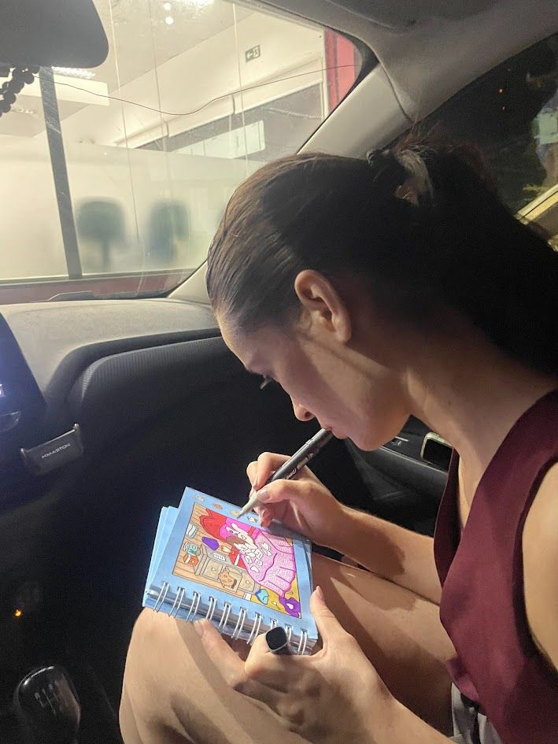
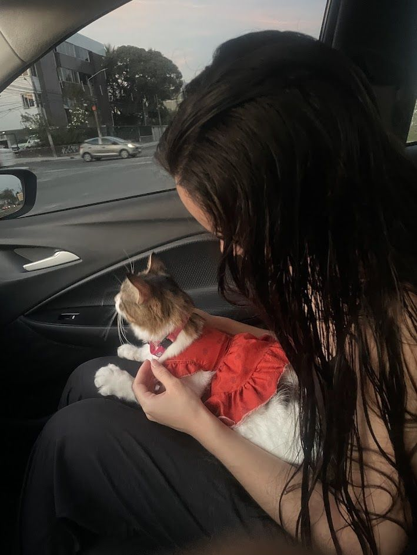
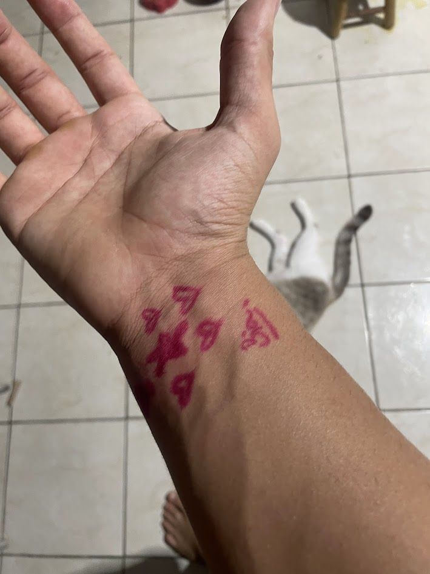
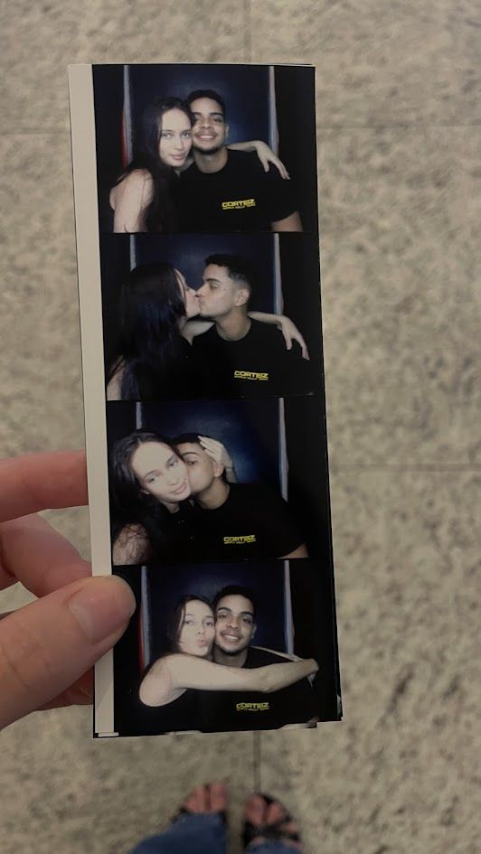
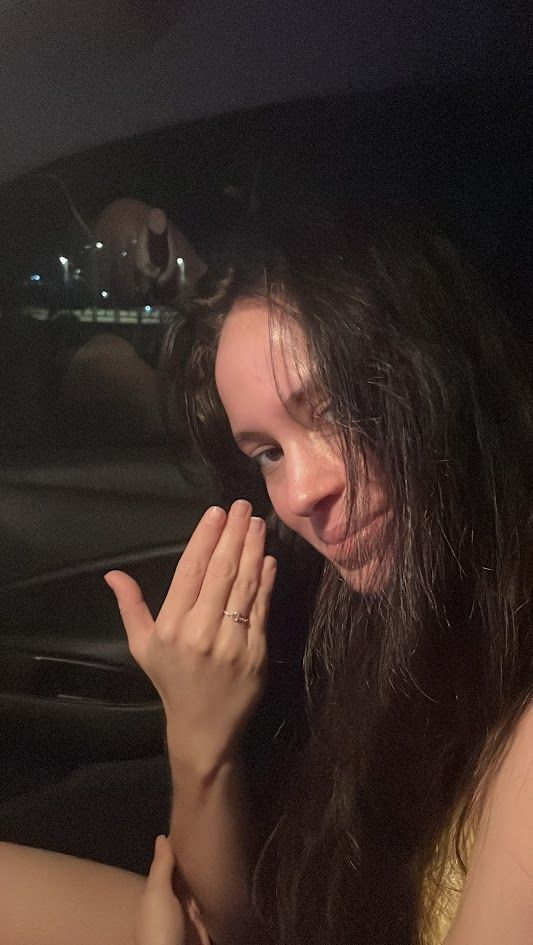
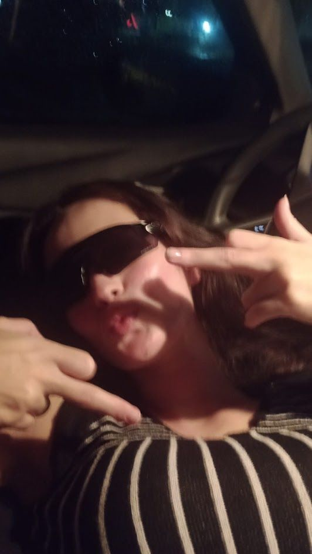

REGISTRO DE BORDO · DO LUCAS PARA A LISETE
a estrela que eu escolhi orbitar
TEMPO DE MISSÃO · ORBITANDO VOCÊ DESDE 05/02/2026
… — e a minha gravidade ainda aponta pra você.
REGISTRO 01 · OS PRIMEIROS DIAS

Os primeiros dias: você colorindo um livrinho no meio da noite, eu fingindo que olhava pra outro lugar. Foi aí que eu entendi os Astrophage — chega perto demais de uma estrela e não existe mais caminho que não seja orbitar ela.
um “Oii” em 25/01/2026 virou a melhor coisa da minha vida.
REGISTRO 02 · O DIA FOFO

Você, a gatinha de vestidinho vermelho e o céu dourado lá fora — três coisas fofas demais dentro do mesmo carro. E eu ali, oficialmente o ser mais sortudo da Via Láctea.
cientificamente comprovado: fofura em dose dupla não tem antídoto.
REGISTRO 03 · A RECORDAÇÃO

Você desenhou coraçõezinhos de caneta no meu pulso. Caneta sai com água — eu sei, porque eu demorei o máximo que pude pra lavar. Foi a primeira tatuagem que eu nunca quis apagar.
alguns registros a pele esquece; esse, o coração arquivou pra sempre.
REGISTRO 04 · O MOMENTO ESPECIAL

Quatro quadrinhos e a gente inteiro dentro deles. Dizem que o universo é grande demais pra caber em qualquer coisa — mentira. Naquele dia ele coube numa cabine de fotos.
evidência nº 4: a gente fica bem em qualquer galáxia.
REGISTRO 05 · O VÍDEO ESPECIAL

Um anel no dedo e esse sorriso tímido de quem sabe das coisas. Os astrônomos medem tudo em anos-luz; eu meço em quantas vezes ainda vou te ver sorrir assim. Resultado preliminar: infinitas.
telemetria confirma: meu coração errou as batidas. de novo.
MAPA ESTELAR · MEMÓRIAS RECUPERADAS
constelação de nós dois
cada ponto de luz é um dia que eu não quero esquecer.
toca nas estrelas — elas são todas nossas.
CONSOLE DE BORDO · TELEMETRIA SENTIMENTAL DA NAVE
relatório da missão
// ORIGEM DE TUDO — 25/01/2026, 13:20
Oii
duas letrinhas e um domingo qualquer. o universo nunca mais foi o mesmo.
Os Astrophage devoram estrelas.
Você devorou meu coração inteiro — e ainda pediu sobremesa.
Você é a minha linha de Petrova: a luz rosa que me mostra o caminho de volta pra casa.
Eu atravessaria 11 anos-luz de olhos fechados só pra te ver rir.
ÚLTIMO REGISTRO · PAZ E AMOR

Lisete,
o Grace atravessou o universo inteiro e descobriu que ninguém se salva sozinho — até ele precisou de um amigo feito de pedra e música. Eu precisei só de um “Oii”.
Sorte a minha: a minha melhor amiga também é o amor da minha vida.
Enquanto existir estrela pra Astrophage comer, eu vou estar aqui — te amando em todas as frequências, mandando bom dia primeiro só pra garantir, e errando as batidas do coração toda vez que você sorri.
Paz e amor, como você faria. Pra sempre, como eu prefiro.
— Lucas Guilherme, seu astronauta
missão cumprida? nunca. ela tá só começando. T+∞